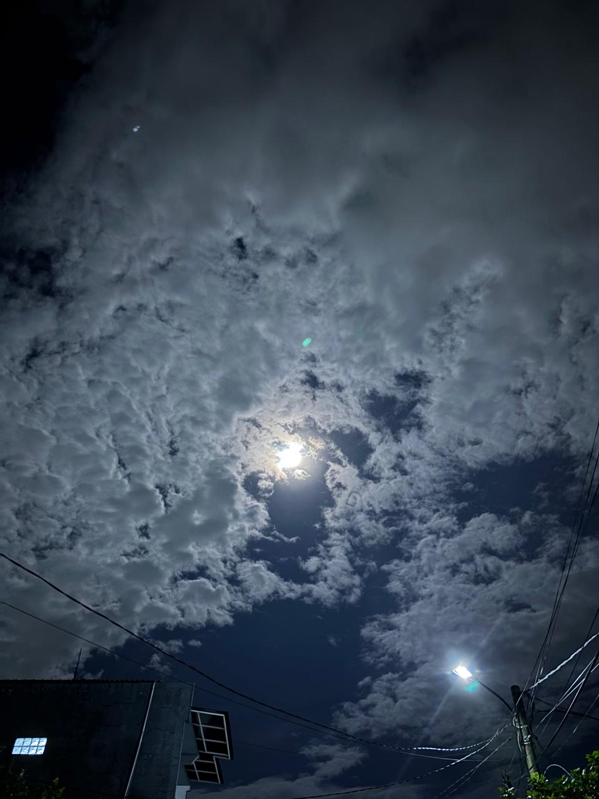

dear terimakaashi,
aku ambil foto ini sebenernya tanggal 4 kemarin wkwkwk, langitnya terang sekali 🌕

haii terimakaashi :) terima kasih karena sudah kirim suratnya buat aku baca, aku sudah baca dan suka semua ceritanya! 🙂↕️
terima kasih juga sudah ceritain aku tentang hari kamu bareng zii dengan segala masalahnya, aku harap kamu bisa berbangga hati saat ini 🙆🏻♂️ aku juga senang baca cerita kamu belajar bareng ustadz mahdi lock, mungkin kamu masih inget respon aku gimana waktu ceritain ini, tapi sejujurnya mungkin aku jadi ketrigger aja buat gak mau kalah belajar 😂😬 but that's not the point, aku senang kamu bisa belajar dan membagikan ilmu yang kamu dapat, karena pada akhirnya aku juga belajar dari kamu jadi terima kasih yaaa :) ✨
sampai dicerita tentang kurma juga lucuuu wkwkwkwkw, aku suka bagian kamu cerita kalau sebenernya belum terlalu suka kurma dari dulu 😂 karena aku juga dulu kayak gitu 😭 thank you for sharing this with me :)
mungkin aku mau membagikan sedikit cerita refleksi tentang apa yang aku pelajari hari ini 🤔
ternyata ngambil suatu pilihan itu emang ada baiknya mikirin tujuannya buat apa dulu 💭
menurutku, perasaan hati itu terkadang jadi alasan paling utama buat kita ngambil suatu keputusan, kayak contohnya "mau makan apa ya sore ini?"
mungkin kalau cuman pakai otak buat mikir, bisa aja tinggal ngambil keputusan ambil makanan yang ada aja dirumah, atau yang bisa dimakan langsung karena secara logikanya kita cuman butuh makanan buat ngisi perut...
perasaan hati ini menurut aku adalah salah satu hal penentu yang memberikan kita pilihan, lebih condong kemana, dan inginnya itu apa. perasaan hati ini jadi kompas dari preferensi apa yang membuat hati kita senang dan bahagia. bisa aja jawabannya jadi "ahhh aku ingin makan marugame udon!" karena itu yang aku rasa bakal bikin aku senang sore itu...
tapi perasaan senang atau bahagia itu fluktuatif dan yang aku pahami ada polanya, yaitu diantara faktor ekspektasi dan juga realita.
sore itu aku gak jadi makan marugame udon... karena ekspektasinya aku coba turunin terus naikin realita yang bisa aku ambil pilihannya. agak random emanggg xixixixiii daritadi nyeritain soal mau makan apa tapi tiba-tiba filosofis, jadi kalau tujuannya mau bahagia doang sih ya itu bisa diubah kapan aja dan gimana aja, tapi kalau tujuannya jelas, tau kalau itu adalah hasil kompromi dari hati dan juga pikiran... duar! tinggal laksanakan aja dehh
last but not least mungkin aku mau share dua ayat ini, an-najm ayat 39-40, baca ajaa sendiri wleee :p
karena aku ngambil referensi dari apa yang aku ceritain dari dua ayat itu heheee, dua ayat itu kerennnn!!!
terima kasiiihh sudah membacaaa :) 🙆🏻♂️
dari mochamad thiesa nabil